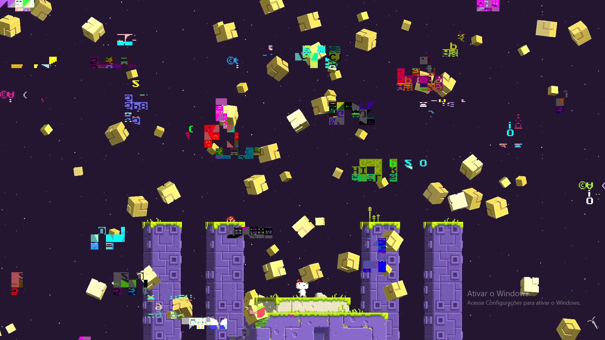
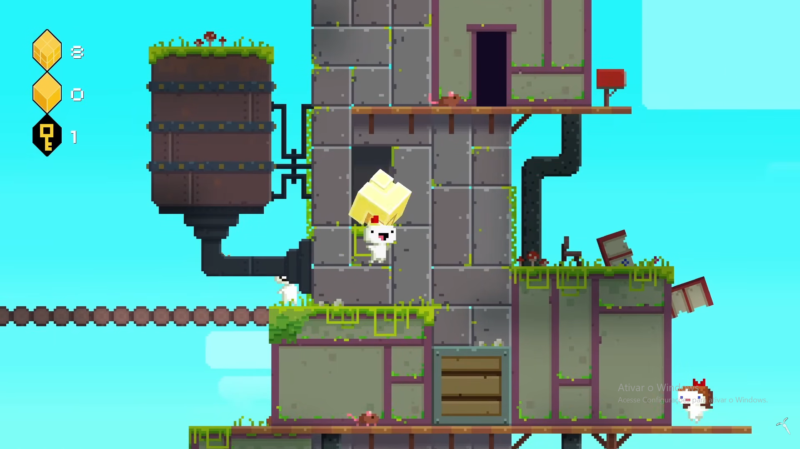
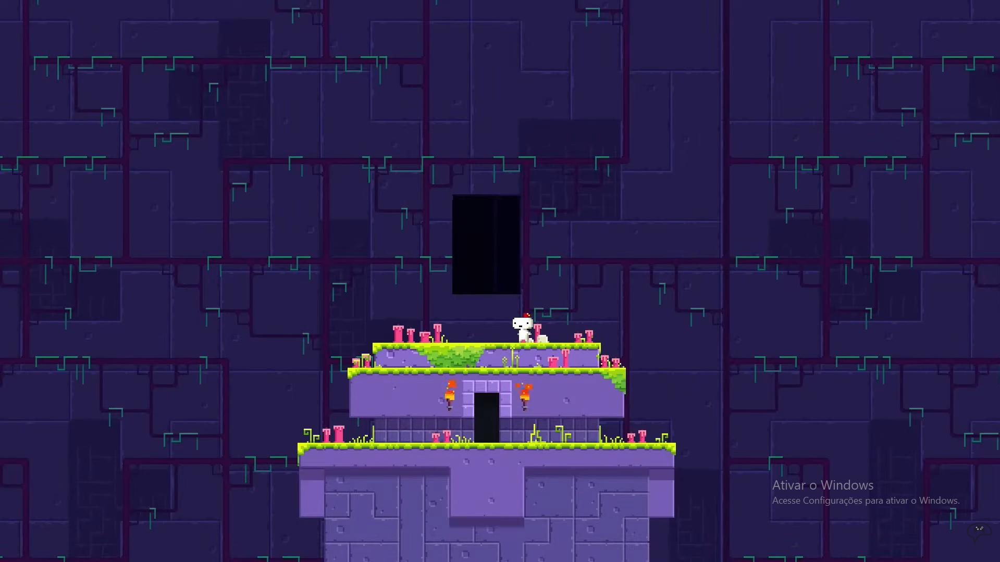

Sobre o jogo:
FEZ acompanha Gomez, uma pequena criatura
bidimensional que vive em um mundo aparentemente plano. Sua vida muda
quando ele recebe um misterioso fez vermelho que revela a existência
de uma terceira dimensão.
Depois que um evento misterioso destrói a estrutura do mundo, Gomez
parte em uma jornada para coletar os fragmentos do
Hexahedron e restaurar o equilíbrio. Para isso, ele
precisa explorar diferentes lugares e utilizar a habilidade de girar a
perspectiva do mundo, descobrindo que existe muito mais escondido por
trás daquela realidade aparentemente simples.
Imagens:


Gameplay e Trailer:
Trilha sonora:
- Nome da faixa: Progress.
- Número da faixa: 4.
- Nome da faixa: Forgotten.
- Número da faixa: 10.
- Nome da faixa: Nocturne.
- Número da faixa: 20.
Informações:
- Lançamento: 2013
- Desenvolvedora: Polytron Corporation
- Publicadora: Trapdoor